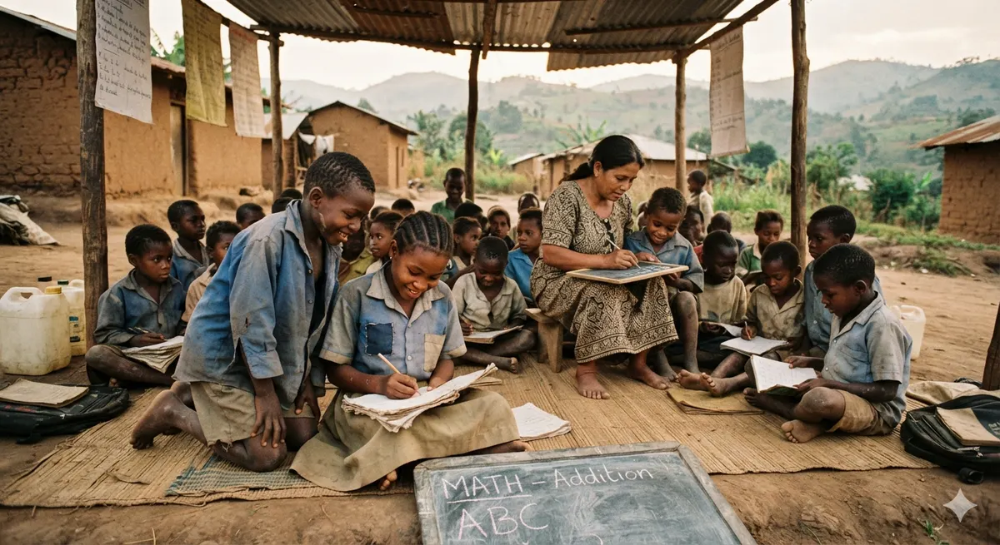

Learning Without Limits
Reading corners, shared books and patient mentors, so a child's curiosity never waits for a classroom to be built.
- Who it is for
- Children aged 5-14 and their families
- The challenge
- Learning gaps widen when books, quiet space and a mentor are out of reach.
- What we do
- Weekly reading circles, a lending shelf, homework mentoring.